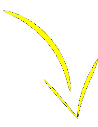

JSON

BSD, C, httpd, SQLite
BCHS works especially well for JSON web applications, which is the de jure method for building dynamic web sites. These applications have a well-defined split between back-end (BCHS), transport protocol (JSON), and front-end (JavaScript, CSS, and HTML5). And there are plenty of tools available to build, document, and deploy your work. Why is this an improvement over simply emitting HTML?
- server load: your user's browser is handling one request at a time—you're handling many, and the extra processing adds up
- updates to site design don't require redeploying your application
- reduced code-bloat from hard-coding complicated HTML trees
- less work-flow dependency between back-end developer and front-end developer/designer
- JSON is natively understood by JavaScript, which itself is a standard component of the web browser
Most (all?) complaints of JSON web applications fall to poor front-end decisions: using enormous
frameworks
, CSP
violations, and really just plain shitty code.
In this short document, I'll sketch out how to set up your BCHS environment for JSON applications.
For a full working system using this method, see dblg.